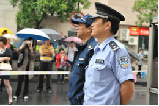
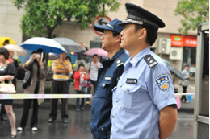

重点提示：
牢记“警情就是舆情”、“舆情就是警情”。注意警容风纪、文明规范执法，防止不当言行被媒体及群众摄录放大。媒体介入第一时间报告，注意接待媒体方式和技巧，不要与媒体发生冲突，遵守宣传纪律和保密规定，严防引发舆情“次生危害”。
一、基本原则
(一)及时报告。始终牢记“警情就是舆情”、“舆情就是警情”的经验教训，在案（事）件发生后，遇有媒体介入，现场执勤民警应将相关情况在第一时间报告现场主要负责人和同级公安宣传部门。
(二)文明接待。现场执勤民警要坚持“理性、平和、文明、规范”的执法理念，尊重媒体采访的合法权利，有礼有节地对待现场记者，避免与记者发生矛盾冲突。
(三)有效应对。案（事）件管辖地公安机关应根据案（事）件处置情况和舆情状况，以积极的态度视情、适度、准确发布消息，赢得公众和媒体的理解和信任，避免回避媒体、封锁消息等造成负面舆情。民警在接受采访时，应注意表达方式和技巧，遵守宣传纪律和保密规定。
二、职责分工
(一)市局警察公共关系处
1、根据市局领导或市局指挥中心指令，负责全市重大、突发敏感案（事）件现场的媒体接待工作。
2、指导全市各级公安宣传部门做好案（事）件现场媒体接待工作。
(二)分局、县（市）局和相关警种
1、分局、县（市）局公安宣传部门负责指导、协调本地区案（事）件现场媒体接待工作。根据分局、县（市）局领导或指挥中心指令，负责本地区重大、突发敏感案（事）件现场媒体接待工作。
2、交警、消防等设有专职宣传部门的警种，负责本警种案（事）件现场媒体接待工作。
3、其他业务警种确定专门部门及联络人员负责本警种案（事）件媒体接待工作。
(三)案（事）件现场处置单位
1、在公安宣传部门未到场的情况下，现场处置主要负责人需指定专人，负责媒体接待工作。
2、公安宣传部门到场后，现场处置单位要积极配合公安宣传部门，共同做好现场媒体接待工作。
3、现场处置工作应始终坚持依法依规处置，防止言行不当被媒体摄录或网络、微博转载放大，引发涉警舆情危机。
4、现场处置单位和民警负有现场媒体接待、采访应对的首问责任。
三、案(事)件现场媒体引导
(一)现场处置民警发现有媒体到场的，应立即报告现场处置负责人和同级公安宣传部门。公安宣传部门接到报告后，根据现场情况及媒体介入程度，视情赶到现场接待媒体、应对采访。
(二)现场处置民警应始终保持警容严整，规范言行举止，切忌谈笑风生、嬉笑打闹。应积极开展制止违法犯罪、组织抢救伤员、勘查事故现场、查找目击群众、封存现场监控、恢复道路畅通等相关工作，防止给媒体与公众留下不作为、消极作为的不良印象。
 

积极开展现场处置
保持警容严整
(三)根据案(事)件现场情况，设置警戒线或划定警戒区，制止记者和无关人员进入。对在警戒区域外采访拍摄的媒体记者，不妨碍警务工作的，一般不予干涉。
设置警戒线
不干涉在警戒区域外正常
采访的媒体记者
特殊情况下，若有中央级媒体记者或重要领导随行记者申请要求进入警戒区采访的，在核实记者身份后报告现场最高指挥员，由其作出决定。同意进入的，由公安宣传部门陪同进入采访。
(四)现场媒体记者较多的，经县级以上公安机关负责人批准，在警戒区外合适位置设置记者采访区。
设置记者采访区
(五)现场负责人应指定专人通过适当方式收集、核实现场媒体记者姓名、所属媒体、联系方式、采访意向、现场活动等基本情况，通报同级公安宣传部门。
1、现场民警可以通过观察摄像机机身、采访话筒、摄影包、便携式电脑及其相关人员的工作服是否有专属媒体的标志或缩写，了解到场媒体的基本情况。
2、现场媒体未经联系现场民警直接采访有关当事人和现场群众的，现场民警应以帮助维护现场秩序为由，设法了解媒体及采访的有关情况。
通过标志、缩写了解到场媒体情况
3、对于重大、敏感案（事）件，现场民警根据现场负责人或公安宣传部门指令，可主动上前出示工作证件，询问了解记者相关情况并进行核查、登记。
(六)媒体现场采访时，民警需维护当事人的人格尊严和个人隐私。
1、避免现场记者正面摄录未成年人、失足妇女以及要求保护隐私的被害人的脸部。
2、现场有违法犯罪嫌疑人的，应尽快带离，避免长时间滞留在公众场合被围观人员和记者摄录。在公共场合对嫌疑人使用手铐、警绳等警械时，应予以遮掩，重要嫌犯可戴头套遮掩面容。
遮掩手铐、警绳等警械
遮掩嫌疑人面容
3、对公共场合暴露的尸体、敏感的车牌，应采用适当的方式进行遮掩，防止围观人员和记者摄录。
遮掩尸体
遮掩车牌
4、对案（事）件受害人或证人的现场调查工作，应在相对独立封闭的空间或远离人群、记者的区域进行，同时要注意对其身份进行保密。
5、案（事）件受害人或证人是否接受媒体采访，一般尊重其意愿。若涉及社会稳定、政府形象或确因案件侦办需要等不宜接受采访的，应及时向其提出建议，同时向媒体表明不宜接受采访的理由。
(七)对媒体记者的正常采访活动，现场民警应予以接待、配合。现场民警经现场负责人授权和公安宣传部门同意，可在职责范围内适当接受采访，对案（事）件基本事实作简单介绍，但对案（事）件及其处理“不定性、不评论、不预测、不下结论”。
接受媒体采访时，应该禁说：
1、粗鲁、不文明、冷漠生硬的话；
2、漠视群众利益、推诿责任的话；
3、指责新闻媒体、群众及其他政府部门的话；
4、前后不一、自相矛盾的话；
5、评论当事人、涉及他人隐私的话；
6、不明确、不了解、不掌握、随意揣测的话；
7、假话。
(八)有下列情形之一的，原则上不接受现场采访：
1、涉及国家安全的；
2、影响社会稳定，损害党和政府或公安机关形象的；
3、涉及公安工作秘密的；
4、涉及民族宗教问题的；
5、现场采访易导致事态恶化或引发涉警舆情危机的；
6、未经授权及公安宣传部门同意的电话采访；
7、现场处置负责人或公安宣传部门决定不得接受现场采访的其他情形。
以上不接受采访的情形，现场民警可根据现场情况，参考下列口径进行灵活应答，婉拒媒体记者采访要求，并将相关情况立即报告现场负责人，同时通报公安宣传部门。
1、我正在执勤，麻烦您先与我局宣传部门联系并取得同意。
2、我正在办案执勤，现在不方便接受采访。
3、案（事）件正在进行调查，具体情况有待进一步核实，无法立即提供情况。
(九)如果发现记者启动摄影器材密录密摄的，要始终保持礼貌态度，同时给予必要的警惕。要避免和记者发生言语甚至肢体冲突，不得用手、用物去遮挡摄像机镜头等。
禁止用手、用物遮挡摄像机镜头
避免与记者发生肢体冲突
1、如果当时衣着不整、状态不佳，可以告诉记者：我没有准备好接受采访，请先关闭摄像机。
2、如果工作紧急不便接受采访，可以告诉记者：我正在工作，请预约时间采访。
(十)现场民警原则上不得接受电话采访。如有记者来电采访，要尽可能记录来电记者姓名、所属媒体、采访内容及联系方式，并耐心向其解释因电话里无法核实其记者身份，不便接受采访，告知其可以通过传真、邮件等形式进行书面采访或来人采访，同时迅速将有关情况和电话内容报告现场负责人及公安宣传部门。
经公安宣传部门审核同意并事先做好协调工作的，则可指定专人在接受电话采访中适度简要介绍案（事）件有关情况或警方已开展的工作。
(十一) 如果记者要求民警帮助联系采访现场负责人的，现场民警切忌直接提供现场负责人的联系电话或将记者直接带到现场负责人面前。可采用以下方法处理：
1、将情况及时告知到场的公安宣传部门，由公安宣传部门负责现场协调。
2、在公安宣传部门未到场的情况下，可先了解记者的采访意图和预计时间，并将情况上报现场负责人，由现场负责人决定是否接受采访。
3、如果现场负责人不方便接受采访的，则可以“现场负责人正忙于案（事）件的处置指挥”等适当理由告知记者暂时无法接受采访。
(十二) 如果记者向现场民警索要案（事）件监控录像等资料，民警应告知：“此类资料有可能作为案（事）件证据，具有保密要求，案（事）件未查清前不能够对外提供。”
(十三) 如果记者向民警索要当事人的联系方式，民警应明确告知：“这是涉及当事人隐私的个人信息，需征得当事人同意，警方无权随意提供。”
(十四) 现场有涉外媒体采访的，现场负责人应立即报告市局指挥中心，通知出入境部门民警到场查验记者身份，记录基本情况，包括中英文姓名、国籍、护照或者记者证号码、所属新闻机构等信息，并通报政府外事部门到场接待处置。
(十五) 对于在现场外围拍摄的所谓“市民记者”、“DV通讯员”等职业爆料人，一般不予干涉，但需了解掌握有关动态，对其提出的采访要求，以工作执勤为由明确予以拒绝。
不干涉市民群众在现场外围的拍摄
(十六) 对现场不服管理，妨碍警方工作或恶意制造事端的媒体记者，应依法果断处置。
1、若记者恶意挑衅、制造事端或强行冲闯警戒区的，民警应及时制止，并用随身携带的录音录像设备固定相关证据。
2、经采用劝阻、口头警告等方式仍不能制止其继续冲闯的，以妨碍公务为由强行带离现场，依据《中华人民共和国治安管理处罚法》第五十条规定依法处理。
同时，公安宣传部门应将记者涉嫌的违法行为及时通报党委、政府宣传部门、新闻主管单位及记者所在媒体。
四、现场新闻发布
(一)现场负责人与公安宣传部门应根据案（事）件性质、媒体记者介入程度和对警方形象的影响程度，共同评估并商议确定是否对外发布新闻，以及新闻发布的时机、地点、内容、形式等。
(二)对于明确需要对外发布新闻的案（事）件，可视情采取灵活的发布形式。
1、对很快处置完毕的案（事）件，可一次性发布；对涉及面广、情况复杂的案（事）件，可分阶段发布。
2、在具体的发布形式上，可采取新闻通稿（格式参照下表）、接受采访或召开新闻发布会等形式进行发布。
|
****案（事）件新闻通稿
一、案（事）件的新闻要素。包括时间、地点、人物、案（事）件经过及造成的后果等。
二、快速处警、积极处置。公安机关迅速出警，维护群众生命财产安全，积极调查处置案（事）件，打击违法犯罪活动，及时消除危害等相关情况。
三、澄清事实、消除影响。对于原因事实清楚明了的案（事）件，及时告知媒体澄清；对于原因较为复杂，事实需要核实的案（事）件，可以“警方正在调查之中”解释。
四、部分案（事）件新闻通稿结尾可以发布预警，提醒市民加强安全防范，普及安全防范知识。
五、联系人，联系方式。
|
3、一般安排熟悉案（事）件情况的具体处置部门副职负责人或经办民警接受采访。受访人员在公安宣传部门的陪同下，按照事先商定的内容和口径，适度介绍案（事）件基本情况。
(三)新闻发布内容一般由案（事）件现场的牵头处置单位和同级公安宣传部门一起拟定，由县级以上公安机关领导审核后发布。重要稿件需报市局警察公共关系处审核，特别重大的稿件需经市局领导审定。
(四)下列情形必须上报市局警察公共关系处审核，并报市局领导审定，同时视情报上级公安机关及党委、政府审批同意后方可对外发布。
1、放火、爆炸、绑架、系列性强奸、投放危险物品、一次杀死3人以上等危害公共安全的严重暴力犯罪案件。
2、涉及党政负责人、学生和外国人等特殊对象的刑事犯罪案件，以及可能影响社会稳定的重要案（事）件。
3、案（事）件中当事人一方为公安民警、可能造成重大涉警舆情危机的。
(五)对外发布新闻时，应切实做到：
1、体现专业素质。对于媒体采访报道，无论事情大小，都要表示关切，并控制好情绪。
2、作好充分准备。了解记者采访的内容或将会提出的问题，拟定统一的对外发布口径。
3、诚实巧妙回应。假话绝对不说，真话未必全说。在未被授权回答该问题时，向对方作出合理解释。
4、禁止“私下透露”。“私下透露”的内容会被媒体以“据警方有关人员称……”等形式公开报道。
5、不作假设推测。仅提供可以公开的事实材料，不作任何主观推测，不妄自对案（事）件定性。
(六)对外发布新闻时，需特别注意案（事）件的下列信息不能向社会公开：
1、重要情报信息的来源、获取手段、交换方法，侦查思路和方案，以及可能泄露公安秘密侦查手段或不宜公开的案件细节等信息。
2、有关受害人、证人、协助人员的信息，公开后可能导致上述人员身份暴露、造成人身安全受到威胁的。
3、在未通知亲属前，不能公开有关死者的姓名、地址等信息。
4、未成年人的姓名、住址和照片等信息。
5、失足妇女的具体身份信息，正面形象照片、视频等。
五、几类常见案(事)件现场媒体引导
(一)杀人案件现场
1、根据案发现场情况，设立警戒区，禁止无关人员、车辆进入。对现场尸体、血腥场面，要采取必要措施遮挡公众视线，以保护被害人合法权益，防止被他人拍摄使用干扰侦查等工作，但须注意不得因此破坏现场。现场民警对警戒区外的记者正常采访活动，一般不予干涉，但应将记者采访情况第一时间报告现场指挥部，由公安宣传部门跟进引导。
2、询问受害人家属或证人，应视情将其带至属地派出所或其它相对封闭、隔离的地点制作笔录，同时注意对其身份进行保密。因侦查办案需要，可与其沟通说明不宜接受媒体采访的理由，取得理解支持。
3、不论是否进行现场发布，均应事先统一宣传口径，口径由县级以上公安机关办案部门、法制部门、公安宣传部门草拟，报经现场指挥部审核确定。现场民警未经授权，不得擅自接受记者采访，透露案件信息。
4、一次杀死3人以上或涉及学生和外国人等特殊对象的杀人案件，需发布信息及时引导舆论的，按本章“现场新闻发布”第四条执行。
(二)涉枪涉爆案件现场
1、立即对案发地点（场所）封控隔离，疏散现场群众，维护秩序，控制局面。经县级以上公安机关负责人批准，可实行临时性交通管制，严禁媒体记者和无关人员进入警戒区。
2、设立现场舆情处置组，由公安宣传部门负责接待记者，同时应及时将现场情况报告地方党委、政府和上级公安机关宣传部门，寻求支持。
3、经现场指挥部同意，视情在警戒区外的合适地点设置记者接待点，由公安宣传部门协调媒体记者在指定区域内采访。
4、对媒体记者干扰正常警务活动或冲闯警戒线的，及时制止并予以警告；不听劝阻的强制带离。对媒体直播案件现场的，由现场舆情处置组报告当地党委、政府宣传部门予以干预。
5、应尽量避免媒体记者对嫌疑人、受害人及物证资料进行摄录。现场处置完毕，警戒区应派员继续驻守巡查，防止媒体记者及无关人员进入现场。
6、涉枪涉爆案件新闻发布统一归口市局新闻发言人办公室管理，全市公安机关任何单位和个人未经市局新闻发言人授权同意，不得对外发布信息。
7、新闻发布必须慎重，内容应准确、适度。新闻发布稿由市局警察公共关系处审核，并报市局领导审定。
(三)交通事故现场
1、现场交警设置事故警戒区，隔离记者和围观人员，并组织抢救伤员、查找目击群众、勘查事故现场、封存现场道路监控。
2、将涉嫌肇事的驾驶人带离现场予以控制。事故人员已经死亡的，遮蔽尸体防止围观人员或记者摄录。
3、事故受伤人员送往医院救治的，要加强与医院方协调，与事故受害人及其家属进行沟通，尽量避免媒体记者接到热线爆料到医院跟进采访。
4、事故现场勘查结束后应尽快予以清理，恢复道路正常秩序，防止道路长时间拥堵引发公众不满，被人炒作。
5、现场事故情况一般以新闻通稿形式发布，通稿由交警宣传部门及事故处置部门拟定，交警支队或县级以上公安机关分管交警的领导审定。通稿内容为警方已调查核实的情况，如发生时间、肇事司机是否涉嫌酒驾，人员受伤及车辆受损情况等，其他情况可以“警方正在进一步调查”等为由进行回应。
(四)火灾事故现场
1、处警人员应迅速在现场周边拉设警戒线，并设置中心和外围警戒区，隔离范围宜相对扩大。现场处置完毕，警戒区不能马上撤除，需安排人员做好现场巡查，并制止无关人员进入。
2、事故现场要落实专人接待媒体，并要求记者到警戒区外指定地点拍摄采访，不得妨碍灭火救援工作。
3、将伤员迅速送往医院抢救，配合政府相关部门做好伤员及死者家属情绪安抚等工作，防止其不满而反映至媒体。
4、火灾事故新闻发布内容由消防部门拟定，经市公安消防局或县级以上公安机关分管消防的领导审定。特别重大火灾事故如造成人员重大伤亡的，需立即报告地方党委、政府和宣传部门，配合其进行新闻发布。
(五)群体性事件现场
1、现场舆情处置及媒体接待由地方党委宣传部门主管，公安机关配合。如发现有媒体到现场的，公安执勤单位应报告地方党委、政府和宣传部门。
2、群体性事件一般不公开报道，确需报道的，由地方党委、政府批准，宣传部门提出报道方案和报道口径，依照有关规定权限审定后，提供统一稿件。公安机关按职责提供基础信息，予以配合。
(六)溺水警情现场
1、按照《杭州市公安机关处置溺水死亡警情操作规范》处置。
2、现场民警一般不接受采访。处警单位经同级公安宣传部门审核同意，县级以上公安机关领导授权，可发布公安机关先期处置情况，如接警时间及溺水人员初步核实情况等。对未查证属实或不便提供的事件性质、死亡原因等相关信息，可以“公安机关正在调查中”或“相关情况还需要进一步核实”等口径予以应对。如记者追问溺水人员生命体征，应建议其向现场医务人员或接收医疗机构了解。
(七)涉及党政机关领导干部的案（事）件现场
1、处警民警发现案（事）件当事人身份是县级以上党政机关领导干部，应立即报告同级公安指挥中心，设置警戒区，禁止无关人员入内，防止信息扩散。现场勘查完毕，安排人员继续巡查，不得立即撤除警戒区，防止记者进入。
2、立即隔离当事人、证人，将其带至较封闭场所，开展调查取证、善后处置、情绪稳控等工作。现场有人员受伤的，立即送往医院救治，并与医院沟通，防止记者采访报道。人员死亡的，尽快查明死因，明确案（事）件性质。
3、同级公安宣传部门同步上案，到现场掌握媒体情况，及时报告地方党委、政府宣传部门。现场处置单位及民警未经批准，不得接受媒体采访，不得对外透露信息。
4、案（事）件舆情引导，是否公开报道，报道方案及口径，提请县级以上地方党委宣传部门依照市委市政府重大突发事件新闻报道的有关规定审定。公安机关按职责提供基础信息，予以配合。
(八)涉警案（事）件现场
1、对公安民警、协辅警人员涉嫌违法违纪行为的报警，所属单位和公安纪检督察部门应立即赶赴现场处置。未经分局、县（市）局负责人批准，现场处置人员不得接受任何媒体或个人的采访或询问。
2、注意安抚现场受害人情绪，保持沟通，避免矛盾激化、事态升级。有条件的，立即将案（事）件受害人、证人以配合公安机关调查情况为由劝离现场，防止其滞留现场与媒体记者及围观人员接触。对受害人向媒体或网络投诉等情况，及时跟进掌握，疏导化解。
3、现场有媒体记者采访的，由公安宣传部门、涉嫌违法违纪民警或协辅警所在单位负责接待并沟通。网上出现相关信息的，由网警、公安宣传、纪检督察、涉嫌违法违纪人员所在单位等部门共同协商处置。
4、民警、协辅警人员涉嫌违法违纪的案（事）件，一般不主动对外发布。已引起媒体介入或网民关注的，视情对外发布引导。
确需向媒体发布的，应诚挚恳切，表明公安机关认真调查、绝不护短的态度及知错就改的立场，提供正在查处、整改及善后等情况，尽力疏解社会公众不满情绪，争取理解和信任。